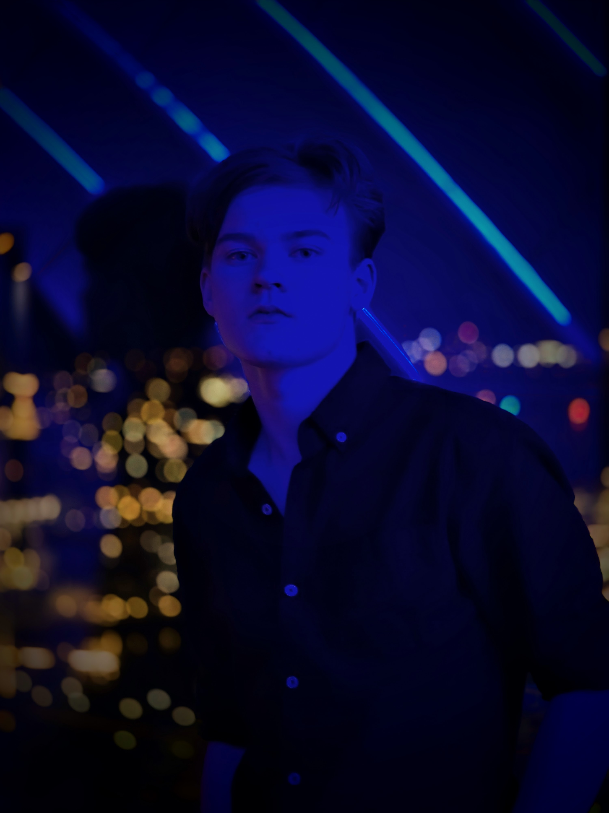

I'm James, a game developer based in Australia, I work primarily in Unity, using C# to craft everything from precision platformers, to rhythm rougelikes, to 3D horror experiences.
I strive to create games that effectively bring out the best in players through meaningful challenge. I am intrigued by how games utilise player psychology and flow state dynamics to create engaging experiences that teach a player skills that can be used outside of a game.
I am currently studying a Bachelor of Games Development at the University of Technology Sydney. I have a background in acting and filmmaking, and I wish to use my experience in these fields to create cinematic game experiences. I am eager to learn new skills and tackle challenging problems in the process.